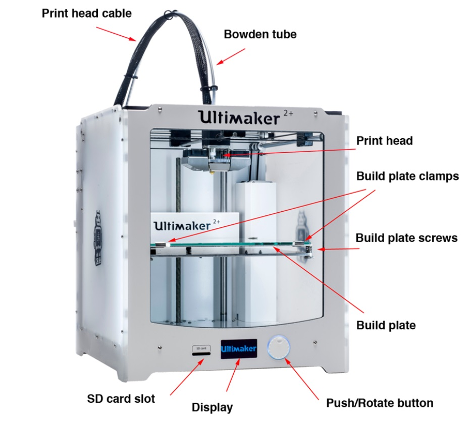

Video credits: The Wrench on YouTube
The most commonly used materials in 3D printing would be PLA (Polylactic acid) and ABS Acrylonitrile butadiene styrene. In SP’s workshops, we tend to use mostly PLA for 3D printing projects. The 3D printing machine that SP uses is the Ultimaker2+, shown below along with its labelled parts.

This is the machine we used to create our 3D knight chess piece for one of our assignments. But before we were able to carry out printing, we must first carry out the steps listed in the workflow below. A conceptual model must first be renderred, followed by building a 3D model using a modelling software. STL fixing is done next and the design is prepared for printing. After printing, there are additional steps that may be done to improve the printed model's design and quality, such as post-processing, painting and assembly of additional parts.

A more in-depth explanation on how these steps were carried out can be found under Knight Chess Piece under the "Projects" bar.